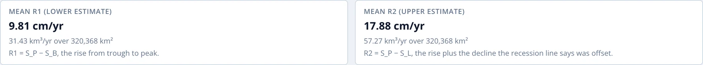
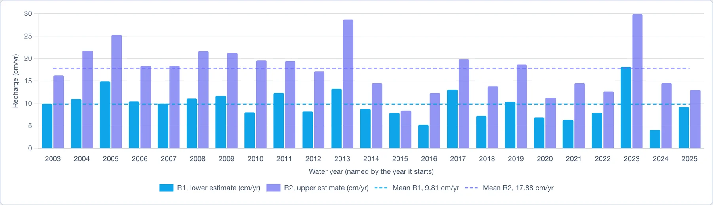
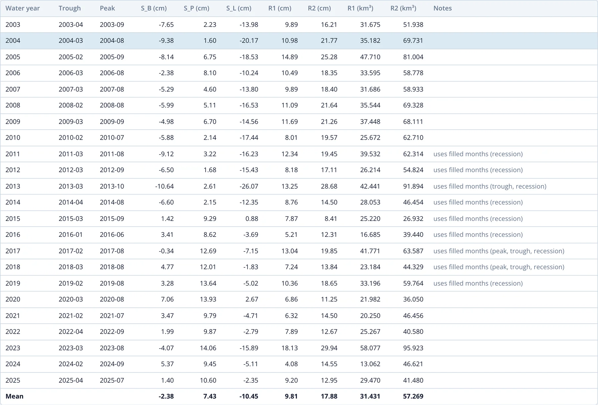

Résultats
La troisième section de la page Recharge Analysis présente la recharge de chaque année hydrologique, à partir des points choisis dans la section précédente. Elle se met à jour dès qu'un point ou le début de l'année hydrologique change.
Recharge moyenne
Deux cartes donnent la moyenne de R1 et de R2 sur toutes les années hydrologiques, en cm/an et, pour une région ou une cellule, sous forme de volume en km³/an sur sa superficie :

Pour le Northern Midwest Aquifer System, la recharge moyenne va de 9.81 cm/an (R1) à 17.88 cm/an (R2), soit de 31.4 à 57.3 km³/an sur 320 368 km².
Recharge par année hydrologique
Le graphique montre R1 et R2 pour chaque année hydrologique sous forme de paires de barres, avec la moyenne de chacun en tirets :

Le graphique montre l'ampleur de la variation de la recharge d'une année à l'autre. Pour le Northern Midwest Aquifer System, R1 va de 4.1 cm en 2024 à 18.1 cm en 2023. L'écart entre les deux barres d'une paire est RD, le drainage que la droite de récession réintègre ; il est le plus grand les années de récession marquée, comme 2013.
Le tableau
Le tableau liste chaque année hydrologique :

| Colonne | Signification |
|---|---|
| Water year | désignée par l'année civile où elle commence |
| Trough, Peak | les mois de SB et SP, avec ✎ s'ils ont été placés manuellement |
| S_B, S_P, S_L | le creux, le pic et l'extrémité de la droite de récession, en cm |
| R1, R2 | recharge de l'année, en cm |
| R1, R2 (km³) | recharge sous forme de volume, pour une région ou une cellule |
| Notes | tout point à vérifier pour l'année |
La dernière ligne donne les moyennes. Cliquez sur une ligne pour ouvrir l'année correspondante dans l'éditeur d'année.
La colonne Notes signale trois situations :
- set by hand : le creux, le pic ou les deux ont été déplacés dans l'éditeur.
- uses filled months : le pic, le creux ou les mois sur lesquels la droite de récession a été ajustée comprennent des mois comblés ; le résultat dépend donc du modèle de comblement. Pour le Northern Midwest Aquifer System, cela concerne toutes les années de 2011 à 2019, période où GRACE présentait des mois manquants isolés, puis les 11 mois entre GRACE et GRACE-FO.
- long recession extrapolation : la droite de récession a été prolongée sur plus de deux fois le nombre de mois sur lequel elle a été ajustée ; R2 est donc moins fiable que d'habitude.
Une année dont les points ne peuvent pas être établis, par exemple un pic placé manuellement avant le pic précédent, affiche la raison dans la colonne Notes et est exclue des moyennes.
Téléchargement des résultats
Download CSV enregistre le tableau sous recharge_<region>.csv. Il comporte une ligne par année hydrologique et une dernière ligne de moyennes :
| Colonne | Signification |
|---|---|
water_year |
désignée par l'année civile où elle commence |
trough, peak |
mois de SB et SP, au format YYYY-MM |
S_P_cm, S_B_cm, S_L_cm |
le pic, le creux et l'extrémité de la droite de récession |
R_S_cm, R_D_cm |
la remontée visible et le drainage réintégré |
R1_cm, R2_cm |
recharge de l'année |
R1_km3, R2_km3 |
recharge sous forme de volume (région ou cellule uniquement) |
long_extrapolation |
true lorsque R2 repose sur une longue extrapolation de la récession |
uses_filled_months |
lesquels de peak, trough et recession utilisent des mois comblés |
set_by_hand |
lesquels de peak et trough ont été placés manuellement |
note |
la raison pour laquelle une année n'a pas de résultat |
Interprétation des résultats
- Présentez R1 et R2 ensemble. Ils encadrent la recharge : R1 omet le drainage pendant la remontée, et R2 prolonge la droite de récession bien au-delà des mois sur lesquels elle a été ajustée. La valeur réelle se situe très probablement entre les deux.
- Utilisez des moyennes pluriannuelles. L'incertitude ±1σ d'une valeur mensuelle de GWSa est souvent aussi grande que la remontée d'une seule année : ±4.4 cm pour un R1 moyen de 9.8 cm dans le Northern Midwest Aquifer System. L'estimation d'une seule année est incertaine, et une moyenne sur dix ans ou plus est bien plus robuste.
- Vérifiez les années qui utilisent des mois comblés. Les résultats de ces années dépendent du modèle de comblement, en particulier autour de la lacune de 2017–2018 entre les missions.
- Le pompage n'est pas de la recharge. Dans un aquifère fortement exploité, la baisse de saison sèche comprend les pompages en plus du drainage naturel. La droite de récession prolonge cette baisse, de sorte que RD, et avec lui R2, comptent le pompage comme de la recharge. R1 y est l'estimation la plus sûre.
- Les petites régions sous-estiment la remontée. GRACE lisse les variations de stockage sur quelques centaines de kilomètres ; dans une région petite ou étroite, la remontée saisonnière, et avec elle la recharge, peut être sous-estimée (voir Résolution, Fuite du Signal et Petites Régions).
- Comparez avec des estimations indépendantes. Les hydrogrammes de puits, le bilan de masse des chlorures ou les études publiées sur le même aquifère permettent de vérifier les valeurs GRACE. Les études de cas Niger et Volta comparent la recharge GRACE à des estimations fondées sur des puits.